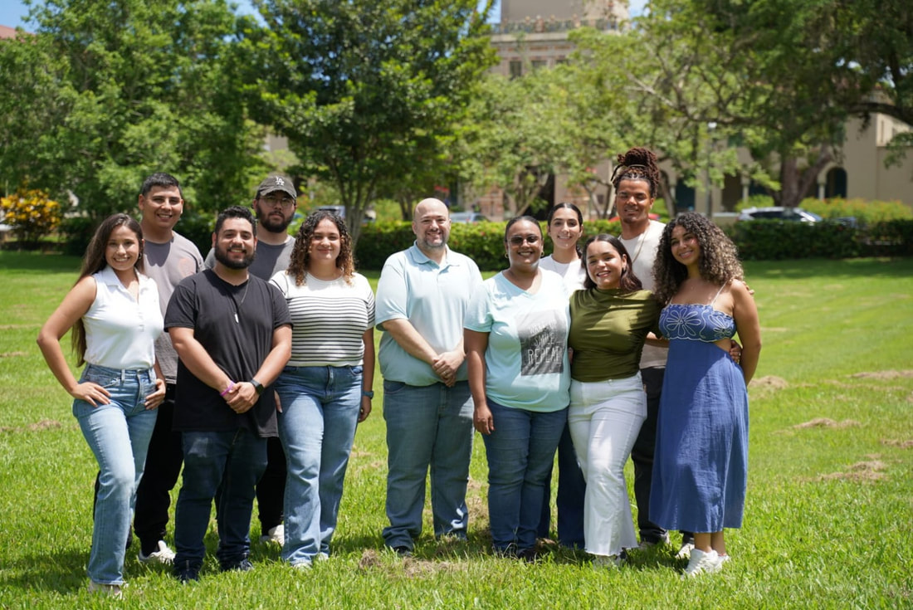
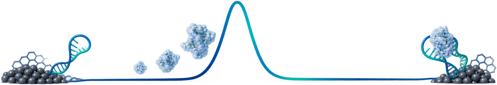
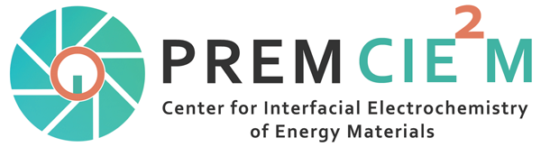
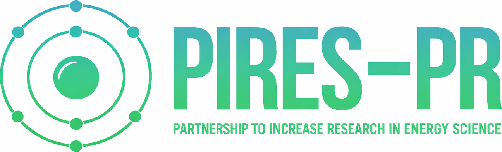

University of Puerto Rico — Department of Chemistry
Electrochemistry and nanomaterials — biosensors, energy materials, and the students building both.
See our research

Electrochemical detection and monitoring of biomolecules, including biosensors for real-time analysis of analytes in sweat.
Carbon nano-onions and non-precious-metal electrocatalysts for the oxygen reduction reaction, aimed at affordable, eco-friendly energy for Puerto Rico.
Development of Carbon Nano-Onions and graphene oxide quantum dots, and catalyst supports for fuel cell applications.
Principal Investigator
Associate Professor, Department of Chemistry, University of Puerto Rico. Leads the lab's work in electrochemical biosensing, energy materials, and custom instrumentation, including the DOE-funded PIRES-PR initiative.
Email: lisandro.cunci@upr.edu
Affiliated programs & funding


Dr. Cunci leads the DOE-funded PIRES-PR initiative.